1962
The Indian National Committee for Space Research is formed under the leadership of Vikram Sarabhai who is also known as father of India's space program and physicist Kalpathi Ramakrishna Ramanathan.
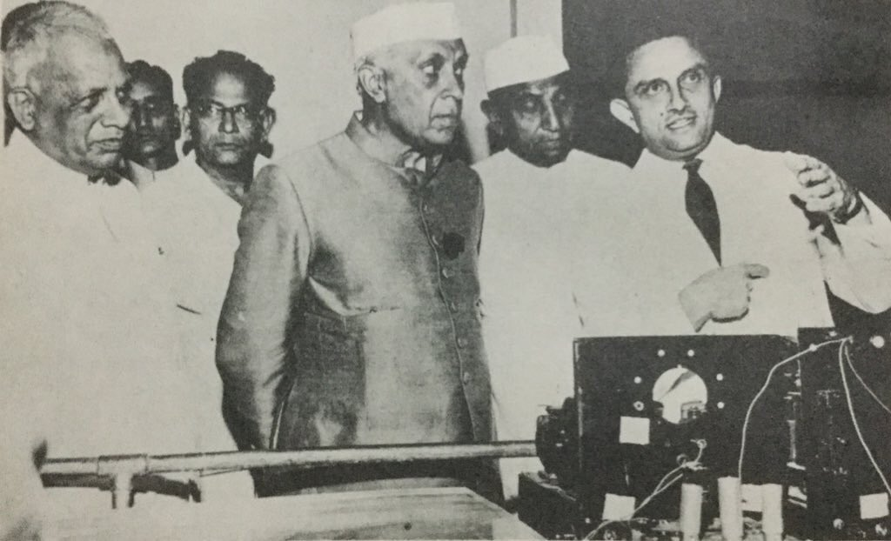The Indian National Committee for Space Research is formed under the leadership of Vikram Sarabhai who is also known as father of India's space program and physicist Kalpathi Ramakrishna Ramanathan.
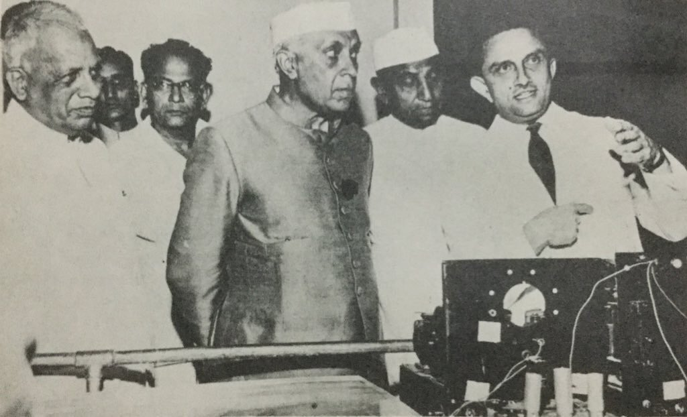The first sounding rocket is launched from Thumba Equatorial Rocket Launching Station in Kerala which is used for probing upper atmospheric regions and space research. It marks the beginning of the Indian space program.
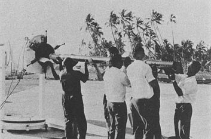Indian Space Research Organisation (ISRO) was formed to harness space technology for national development.

On 19 April, first Indian Satellite, Aryabhata was launched into space. It marked a milestone in India's space programme because it was completely designed in the country and launched from a Russian facility.

The first experimental remote-sensing satellite which was built in India was launched namely Bhaskara-I. The images send by it are used to study hydrology and forestry and oceanographic studies.
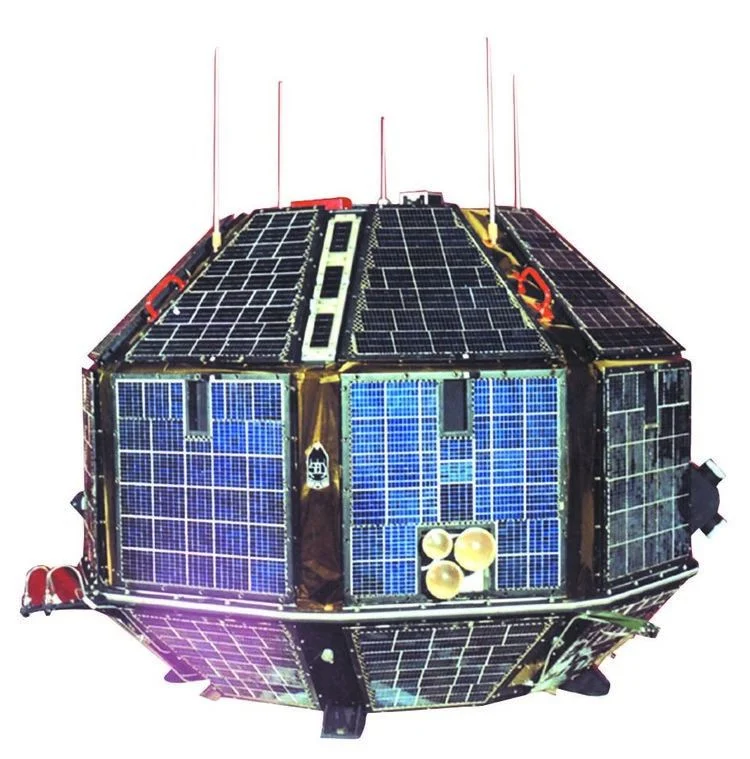India's first experimental satellite vehicle was launched namely Satellite launch Vehicle-3 (SLV-3) which makes ISRO sixth nation in space program. SLV-3 launched second time with Rohini. The mission was successful.
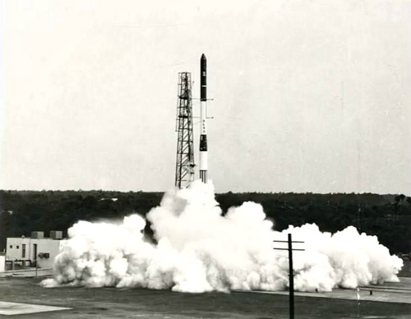A joint manned mission of India and Soviet Union has been launched. In this mission the first Indian cosmonaut, Rakesh Sharma, spends eight days in Russian space station Salyut 7.
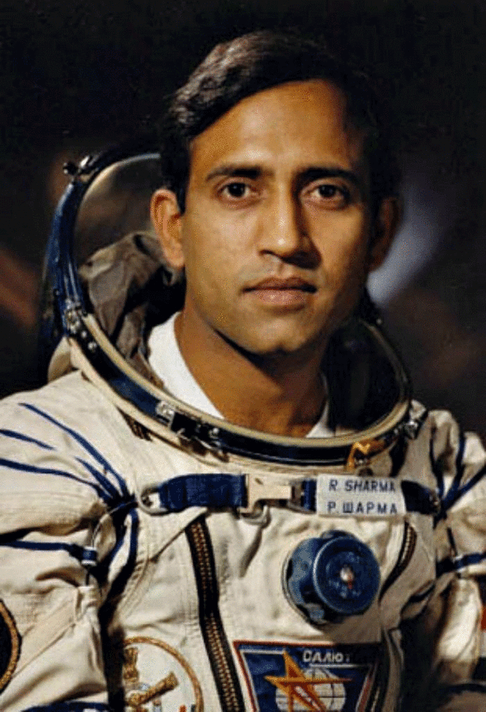Developed in 1990s and has become the Indian space mission's most reliable workhorse. In 1993, PSLV carried out its first mission and its first successful mission was held in next year. No doubt for next 20 years, it launched several satellites for historic missions like Chandrayaan and Mangalyaan.

Kalpana-1 was the first dedicated meteorological satellite launched by Indian Space Research Organisation using Polar Satellite Launch Vehicle on 12 September 2002.
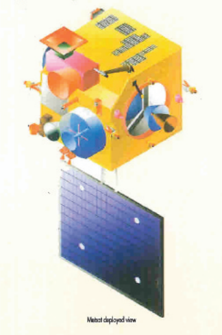PSLV-C6 carried and injected India's two satellites; Cartosat-1 (a.k.a. IRS-P5) and HAMSAT into the Sun-synchronous orbit.
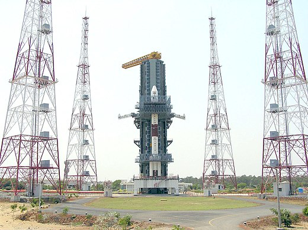India's Chandrayaan-1 first moon mission was launched by PSLV.The spacecraft was orbiting around the Moon at a height of 100 km from the lunar surface for chemical, mineralogical and photo-geologic mapping of the Moon.
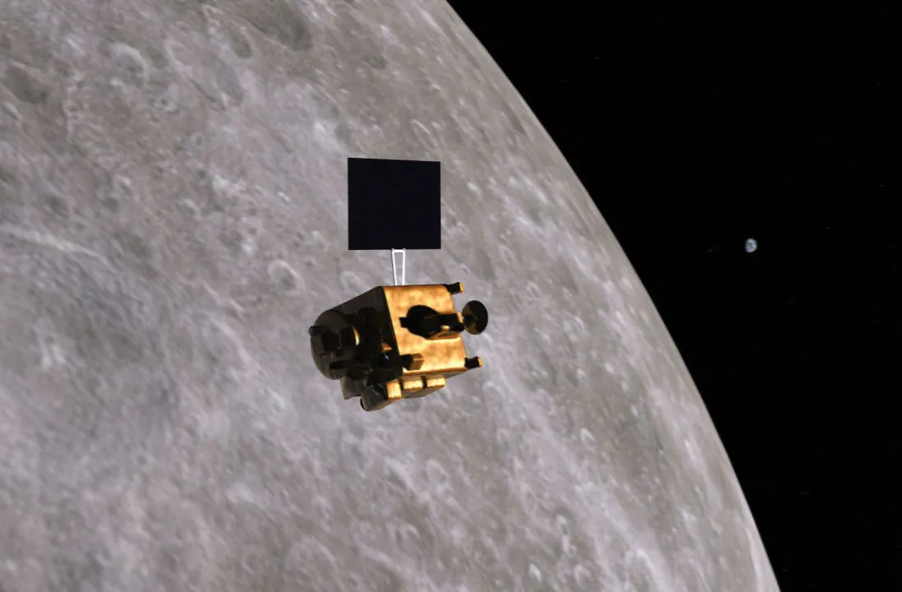PSLV-C22 was successfully launched with India's first indigenous Regional Navigation Satellite IRNSS-1A on 1st July, 2013
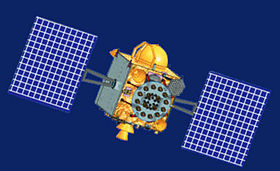India's first interplanetary mission to the planet Mars known as Mars Orbiter mission (MOM) or Mangalyaan was launched. On 24 September, 2014, MOM entered Mars orbit. India became the first country in the world to insert a spacecraft into the Martian orbit in its very first attempt.
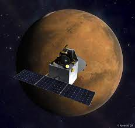On 5 December, 2018, GSAT-11 India's heaviest communication satellite launched successfully from French Guiana.
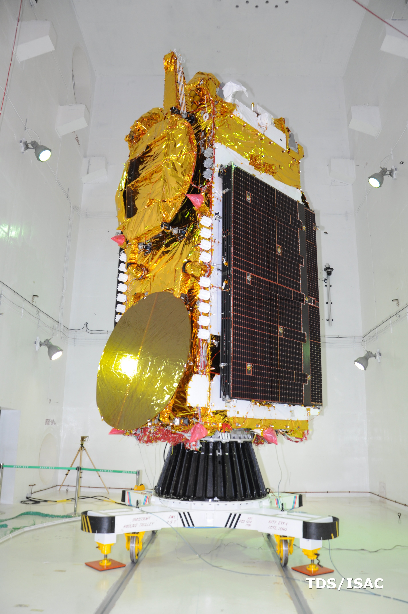Chandrayaan-2 is the second lunar exploration mission developed by the Indian Space Research Organisation.t consists of a lunar orbiter, a lander, and the Pragyan rover.
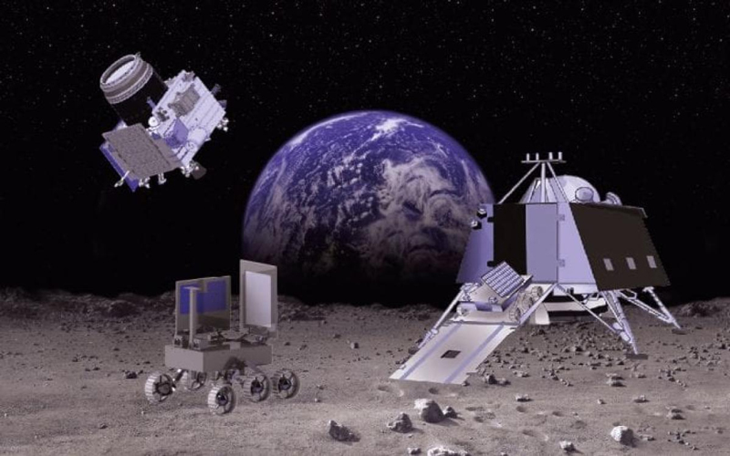Chandrayaan-3 is third and most recent lunar Indian Space Research exploration mission under Chandrayaan programme. It consists of a lander named Vikram and a rover named Pragyan similar to Chandrayaan-2, but does not have an orbiter.
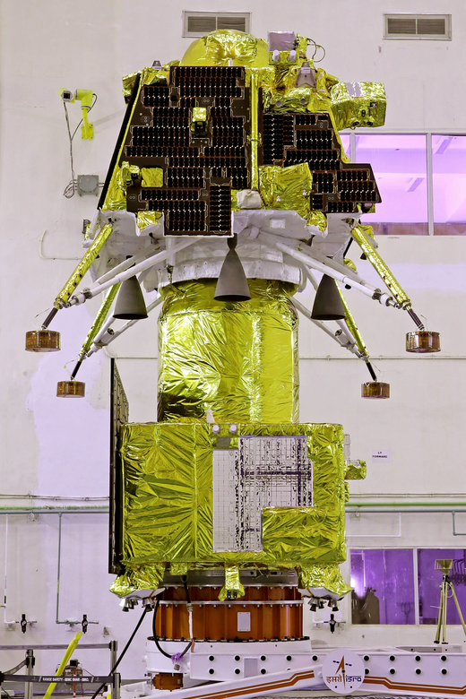